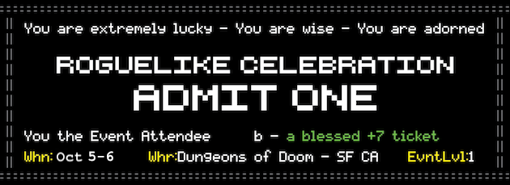
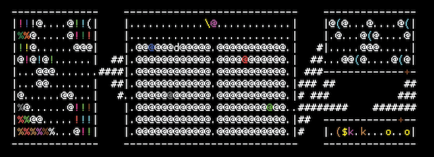

Roguelike Celebration @@@

A celebration of roguelike games
The Roguelike Celebration is happening on Saturday and Sunday October 5th and 6th, 2019 at the GitHub office in San Francisco.
Buy Tickets Here! Watch on Twitch!
The Roguelike Celebration is a community-generated weekend of talks, games, and conversations about roguelikes and related topics, including procedural generation and game design. It's for fans, players, developers, scholars, and everyone else, including people new to this type of game!
If you or your company would like to sponsor this event, please send us a message at contact@roguelike.club (see sponsorship levels).
2019 Schedule
All talks will have live captions provided by White Coat Captioning.
Friday, October 4
| 7:00 | Opening party hosted by BackerKit, 1265 Folsom St |
Saturday, October 5th
| 9:00 | Doors Open and Breakfast (pastries from Arizmendi and coffee) |
| 9:45 | Kickoff |
| 10:00 | Alexei Pepers - A Guide to Proc Gen Practitioners |
| 10:30 | Isaac Karth - Why Do You Want to Generate That? A Vocabulary For Talking About Procedural Generation |
| 11:00 | - break - |
| 11:15 | Max Kreminski - Designing AI systems to support player storytelling. |
| 11:45 | Spencer Egart - Procedurally Generated Ritual Spell Systems |
| 12:00 | Adrian Herbez - Let's get Physical: 3d Printing for Roguelikes |
| 12:15 | Andrea Interguglielmi - Designing a turn based roguelike inside a real time simulated environment, and the many headaches that come after |
| 12:30 | Lunch (Palmyra) |
| 2:00 | Mark R Johnson - Speech Generation in a Procedurally Generated World |
| 2:30 | Everest Pipkin - Corpora as medium: on the work of curating a poetic textual dataset |
| 3:00 | - break - |
| 3:15 | Max Hawkins - Mapping Activity Space - Adventures in Randomized Living |
| 3:45 | Robin Sloan - Writing with the machine: GPT-2 and text generation |
| 4:15 | - break - |
| 4:30 | Todd Furmanski - 1 Button, 2 sprites, 4 directions, 8 Creatures, 16 Kilobytes: Experiences Making "Dragon's Descent," a Roguelike Action Game for the Atari 2600 |
| 4:45 | Leif Bloomquist - Updates to Commodore 64 and Retro Multiplayer Roguelike Development |
| 5:00 | - break - |
| 6:00 | Dinner (Curry Up Now) |
| 7:00 | Arcade and Party (themed alcoholic + non-alcoholic cocktails from GitHub's bartenders) |
| 10:00 | Go Home |
Sunday, October 6th
| 9:00 | Doors Open and Breakfast (pastries from Arizmendi and coffee) |
| 9:45 | Kickoff |
| 10:00 | Thomas Biskup - Thoughts about modern roguelike user interfaces |
| 10:30 | JP LeBreton - All Possible Glyphs: Playscii, an ASCII art, animation, and game creation tool |
| 11:00 | - break - |
| 11:15 | Benjamin Berman - Tips, Tricks and History for Card Game Roguelike Design |
| 11:45 | Patrick Devine - 2D Sprites with Unicode and Golang |
| 12:00 | Evan Ovadia - ASCII, Sprites, and Symbolic Graphics |
| 12:15 | Gabriel Santos - ASCII Art Techniques & Animation |
| 12:30 | Lunch (TBD) |
| 2:00 | Brian Bucklew - Dungeon Generation via Wave Function Collapse |
| 2:30 | Scott Kovach - Managing Game Logic With Rule Systems - Using Relational Programming to Build Games |
| 3:00 | - break - |
| 3:15 | Kawa - Yet Another Conduct Conversation: a history of conducts in roguelikes |
| 3:45 | Jim Shepard - Blooming on the Battlefield: Relationships, Rivals, and Romance in Gameplay |
| 4:15 | - break - |
| 4:30 | Andrea Roberts - That's the Way the Ball Bounces: Using Physics to Manifest Chance in Roundguard. |
| 4:45 | Aaron Santos - Optimizing procgen parameters using mini-batch gradient descent |
| 5:00 | Stella Mazeika - Is This Even Randomized?: Turning Classic Games Into Multiplayer Roguelike Experiences |
| 5:00 | Roguelike Trivia Game Show |
| 6:00 | Head Out |
Sponsors

Google Open Source is providing funds for catered meals
during
the conference.

GitHub is donating
use of
their office event space, including recording video and audio for the talks.


Noisebridge is a hackerspace
for technical-creative projects, doocratically run by its members. It is a non-profit educational
institution
intended for public benefit. We're grateful they serve as our fiscal sponsor.
Is your organization interested in sponsoring Roguelike Celebration? Check out our sponsorship page!
Want to get updates?
Sign up for occasional email updates about upcoming Roguelike Celebration events.
Use the #roguelikecel hashtag on twitter!
Follow us on twitter: @Roguelike_Cel
Tweets by roguelike_celWhy?
Roguelike games have been part of gaming culture for over 30 years! They have a deep and special place in our hearts. There are so many fans across age groups and around the world that there should be a place for all of them to get together and celebrate these unique games.
We were inspired to do this by the International Roguelike Development Conference — and instead of a focus on development, this was for all of us — the players!


Our guidelines
Roguelike Celebration is a friendly and respectful celebration that welcomes players of all levels of experience (including no experience) and of all ages (people with kids welcome).
We have a code of conduct for all participants, since we're dedicated to a harassment-free conference experience for everyone. Our code of conduct.
We also recommend Recurse Center style social rules.
| ! % . . @ . @ . . @ . . . @ @ . \ \ \ \ \ . |